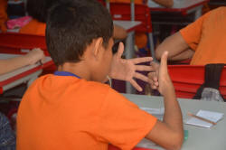
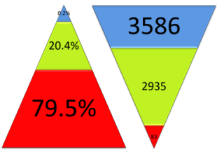
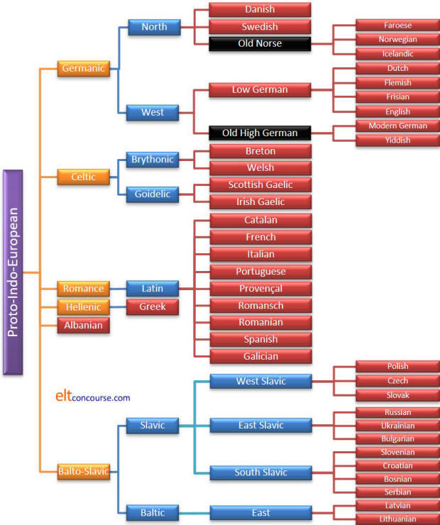
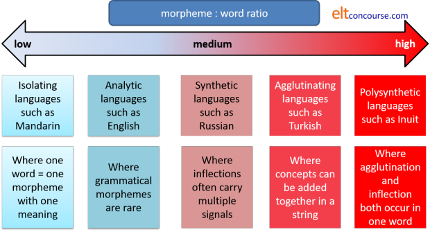

Types of languages
This guide is an overview and a condensed one at that.
Before we get to classifying languages by their structure and so on,
it is worth taking a little time to look at the number, range,
origin and
distribution of languages in the world.
|  |
How many languages? |
Well, it depends a little on how you count. There are some issues with counting the world's languages and estimates vary from around 6000 to over 7000. The issues are:
- The border between a language proper and a dialect is fuzzy. At exactly what point a variety of a language becomes a separate language in its own right is often a decision made on political or social grounds rather than on a purely linguistic basis. Examples, often cited, are Czech and Slovak or Danish and Norwegian. In both cases the language pairs are almost entirely mutually comprehensible but political and national boundaries contrive to classify them as separate languages.
- On the other hand, within large languages such as English, Arabic or German there often exist varieties which are not mutually comprehensible but, because of other social and political considerations, these varieties are rarely classified as separate languages. Politics and the need to maintain cultural or national identity often play a significant role here.
- Also for national and political reasons, the numbers of people speaking a minority language may be deliberately underestimated or the very existence of the language may not be recognised.
- In some cases a better definition of a language is as a macrolanguage which encompasses a range of mutually unintelligible (or variably intelligible) varieties. Macrolanguages are often spoken across large areas which are culturally connected. The Ethnologue (at https://www.ethnologue.com/statistics/size) lists 14 varieties of Chinese as separate languages and distinguishes 20 varieties of Arabic which in both cases vary in the amount of inter-intelligibility with other varieties. Malay and the main languages of Pakistan are also sometimes considered as examples of macrolanguages.
- Languages die, populations move and people change. In some cases census data are unreliable and in some, no reliable data at all exist. Some estimates are that a language is lost forever every 10 or so days. Half the world's languages have fewer than 5000 speakers and that puts them in a precarious position. UNESCO estimates that over 2500 of the world's languages are currently endangered.
 |
Why is this important? |
Knowing something about the languages your learners speak is
helpful in a number of ways.
Click here when you have thought of two.
- Knowing how our students' languages differ from English will help us anticipate problems and deal with them.
- Knowing how our students' languages are similar to English will help us to plan input efficiently.
- Demonstrating that we know something about our students' languages will impress, please and reassure them.
How many people speak it? |
See if you can identify five of the world's language spoken by
the most people.
Click here when you have made your selection.
| Language | Number of native speakers | Percentage of the world's population |
| 1 Mandarin 2 Spanish 3 English 4†Hindi/Urdu 5 *Arabic 6 Portuguese 7 Bengali 8 Russian 9 Japanese 10 Punjabi |
955 million 405 million 360 million 310 million 295 million 215 million 205 million 155 million 125 million 100 million |
14.1% 5.85% 5.52% 4.46% 4.23% 3.08% 3.05% 2.42% 1.92% 1.44% |
For the reasons listed above, all statistics in this area are
questionable.
*The status of Arabic in this list is disputed because of the mutual
unintelligibility of its various forms. It is probably better
considered as a language group rather than a single language because
differences between varieties are comparable to the differences
between, e.g., French and Spanish or German and Dutch.
†For around 75% of speakers Hindi and Urdu are mutually
comprehensible.
Other estimates will vary and these figures are not precise. French and German appear in many lists of the top 10 and are certainly in the top 20.
Language distribution |
Languages are not equally distributed around the world in terms of
their numbers of speakers. The figures cited here are for
indigenous languages rather than those brought in by modern
immigration. In the UK, for example, there are, apart from
English, at least 8 other languages spoken by indigenous
populations. If one adds in languages imported by migrant
communities, that number rises to over 300.
Here are two charts based on data from the Ethnologue site:
 |
Europe, as you see, is
the least variable of all the continents with only 4.1% of
the world's languages indigenous to it. The Pacific regions, by contrast, although containing far fewer people, have over 1000 more languages. Vanuatu, an island group of around 12,000 square kilometres, alone is home 109 languages, approximately one distinct language for every 1,880 speakers. Europe, with an area of 10.2 million square kilometres, is home to 288 languages: approximately one language for every 2.5 million speakers. (Some figures from Harrison, 2007:11) |
 |
When we look, instead,
at languages spoken in these areas by percentages of the
world's population, the case is greatly altered. European languages are overrepresented and speakers of these languages constitute over one quarter of the world's population whereas the indigenous languages of the Americas are spoken by less than one percent of the world's population, despite having nearly four times as many languages. Asia is also overrepresented with nearly 60% of all speakers but only one third of the world's languages. The Pacific region contains over 18% of the world's languages but they are spoken by only 0.1% of the world's population. |
When it comes to language size, the figures show that 83 languages are spoken by 79.5% of the world's population and the smallest 3586 languages spoken by only 0.2% of people (Harrison, 2007:14). The following is adapted from Harrison but the figures are probably even more extreme since this research was done.
% of Speakers |
No. of Languages |
|  | |
Nearly all the languages in the blue zones in this chart are endangered and even some in the green zones which are currently healthy may be threatened in the future.
 |
Classifying languages |
There are fewer ways to classify languages than there are
languages but still rather a lot, unfortunately.
Because this site is concerned with English language teaching rather
than theoretical linguistics, we will be taking a simple and rather
loose approach.
Be assured that if you want to learn more, there is plenty of
literature in the field of language typology to keep you amused.
Families of languages |
The most obvious way to classify languages is to consider where
they are spoken and how they relate to each other.
The results of such research are often interesting and colourful
maps of the world or regions with languages shown in terms of their
affinities and where they are spoken. Here's one, for example:

We can, in fact, take a broader brush and locate some major
groups. The jury is still out concerning how languages are
classified in detail but the principle is that languages which are
related descend from a common ancestor, so, it follows, languages
within the same family should diverge over time rather than converge
due to borrowing and geographical proximity. The difference is
often explained as languages which have a genetic relationship as
opposed to languages which have what is called an areal
relationship. The former share a common proto-language
ancestor, the latter are not genetically related so any similarities
are caused by cultural influences on each other or by their
geographical proximity which has led to conquest or trade and
cultural mixing.
A good example is English which is a West Germanic languages,
closely related to Dutch and German but which has many borrowings
from French (to which it is less closely related) that can be
traced to the centuries following the Norman invasion in which
French rather than English was the language of the ruling elite.
Here's a list:
- Amerindian languages
- are indigenous to North and South America.
This is no longer considered a family of related languages but is the term used to describe all American languages, north and south, and includes, therefore, enormous variety. Examples are Na-Dene, Chinook, Totonac and Yamana. - Afro-Asian languages
- are indigenous to North and North-East Africa and the Middle East and this group is sometimes called Hamito-Semitic. There are some 350 languages in this group, spoken by around 350 million people. Examples are Hausa, Amharic, Berber, Arabic, Hebrew, Somali and Cushitic.
- Niger-Congo languages
- are indigenous to sub-Saharan and Central Africa. There are around 1500 languages in this group, spoken by about 350 million people. Examples are Igbo, Ewe, Swahili, Wolof and Ashuku.
- Bantu languages
- are indigenous to Southern Africa and this group is often considered a sub-group of the Niger-Congo languages (above) from which, arguably, they diverged when the Bantu migrations to the East and South took place. Estimates of the number of Bantu languages and native speakers of them vary widely (between 200 and over 500 languages, spoken by around 50 million people). Examples are Zulu, Xhosa, Ndebele and Makhuwa.
- Indo-European languages
- are indigenous to Europe, Northern Asia and Southern Asia. Although there are only 420 or so languages in this group, Indo-European languages are spoken by around 3 billion people making it the largest group of all – 6 out of 10 of the top 10 languages listed above are Indo-European. Examples are English, Hindi, Russian, Greek and Spanish. Not all European languages are Indo-European.
- Ural-Altaic languages
- are indigenous to Central Asia. This is a contested
grouping but, if the group exists at all as a separate family, examples
would include Finno-Ugric, Turkic, Mongolic, Tungusic and Caucasian.
The designation of languages as Altaic is now largely
discredited (because of evidence of convergence caused by
borrowing and geographical proximity rather than divergence).
It still appears on many maps, including the one above.
One preferred designation is to split these languages into separate independent families: Turkic languages (of which there are around 30, stretching from Istanbul to China and north to Siberia), Tungusic languages (spoken in northern Russia and scattered across China), Mongolic languages (a group of languages centred on Mongolia), Caucasian languages (spoken between the Black and Caspian seas) and Finno-Ugric (Finnish, Estonian, Sami and Hungarian as well as some languages of central Russia). - Sino-Thai languages
- are indigenous to China and South-East Asia. This group is frequently referred to as Sino-Tibetan. There are around 420 languages in this group, spoken by 1.2 billion people. Examples include the Chinese languages, Vietnamese and Thai.
- Dravidian languages
- are indigenous to the southern tip of India and Sri Lanka but widely spoken further north. There are only about 30 languages in this group but they are spoken by 200 or so million people. Examples include Telugu, Tamil, Kannada and Malayalam.
- Austronesian languages
- are indigenous to the Pacific Islands, the archipelagoes between Asia and Australia and Madagascar. There are around 1200 languages in this group, spoken by about 350 million people. Examples include Malay (Indonesian and Malaysian), Javanese, and Filipino (Tagalog).
- Papuan and Australian languages
- are indigenous to Australia and Papua New Guinea and this group is sometimes called Trans-New Guinea. There's a huge range here with 500 languages spoken by 3 million people. Examples include Warlpiri, Melpa, Enga, Ekari and Tiwi.
Hidden in the categories above is an enormous range of language
types and language groupings. As a piece of information it may
be interesting and, as a sign that you can identify your learners'
first languages, it may be impressive but as an aid to teaching languages, it is less useful.
A better guide is, in fact, a map of where languages are now spoken
rather than the indigenous languages categorised here. If you
take that approach, it is clear that in most of both North and South
America, Indo-European languages are prevalent (English, French,
Spanish and Portuguese).
You can, however, use language family information to make some
guesses about possible learner difficulties. If you know the
problems faced by speakers of one language, then you can be fairly
sure that speakers of closely related languages will have similar
issues.
Sub-families (such as Slavic, Germanic, Turkic, Semitic and so on)
are more helpful in this respect.
Isolates
There are a number of languages which belong to no recognisable
family and these are often presumed to be relic language which
escaped extinction by invading people who absorbed local languages
or wiped them out.
Well known examples include Basque, spoken in North-Western Spain
and South-Western France and Ainu, spoken in Japan and (previously) Eastern
Russia. There are many more around the world, some vibrant,
some dying, like Ainu, and some already extinct. Korean, too, may be
classified this way as the language has, so far, resisted scholars'
attempts to relate it to other languages 'genetically', so to speak.
Endangered languages
A few facts about language loss:
- In less than 100 years, half of the world's languages will have become extinct. The last speakers of these languages are probably alive today.
- Over 3500 languages in the world have, on average, fewer than 2500 speakers.
- One tenth of the world's languages have fewer than 99 speakers and will be lost when those speakers die because they are not being passed on.
- At current rates, we lose a language every 10 days or so and the speed of extinction is accelerating.
When they are lost, languages are gone forever. Languages
(some of them at least) may be preserved in libraries, in recordings
and dictionaries but a stuffed dodo is no substitute for the living
animal. This kind of cultural damage has been compared to
dropping a bomb on The Louvre.
With the loss of a language, we lose forever ways of classifying and
thinking about the world, cultural attitudes and artefacts as well
as a resource for language students of the future. We do not
know what we are losing and, in the cases of many small languages,
we will never know because the language will cease to exist before
it can be studied.
 |
Family trees |
A subset of mapping languages is a family tree approach akin to
biological taxonomy.
In this approach, an early source language is identified (often
called a proto-language) and the descent of a variety of languages
from it is mapped onto a family tree. It can be helpful and
informative for teaching purposes because it clearly shows which
languages are most closely related and will share similar structures
and lexicons.
Here's an example of a frequent family tree for some Indo-European
languages and similar diagrams can be drawn for other language
groups. Languages in black
are extinct and other extinct languages such as Anatolian, Cornish,
Prussian and other West Baltic languages and Tocharian are excluded
although modern, extant languages are often descended from them.
All the modern Italic languages, for example, are descended from
Latin but only Ecclesiastical Latin remains and other forms,
Classical and Vulgar Latin, are no longer spoken. Four extinct
languages can be identified as ancestors of modern Spanish.
Goidelic and
Brythonic refer to branches of
Celtic, not actual languages.

There is a much more complete diagram in Wikipedia (go to https://en.wikipedia.org/wiki/Indo-European_languages for more).
This diagram is not complete. West Baltic languages are all
extinct so not included here. There's another, slightly
simpler
tree in the guide to the roots of English, linked below in the list
of related guides, which is only concerned with setting English in
its geographical context.
It's fairly easy to draw some inferences from charts like this
concerning language kinship and similarities.
The further to the right you go in the diagram, the more akin the
languages will be.
Indo-European languages are not confined to Europe and extend
eastwards and south-eastwards to include many in the Indian
subcontinent and central Asia group of languages known as
Indo-Iranian (a group which can be further subdivided): Persian, Balochi, Hindi, Sanskrit, Marathi, Punjabi, Gujurati, Nepali etc.
Approximately 1.5 billion people speak these languages.
On the other hand, not all European languages are Indo-European.
Maltese is a Semitic (i.e., Afro-Asian language), the equally
unrelated Finno-Ugric group includes Finnish, Hungarian, varieties
of Sami and Estonian and Basque, as we saw, is a relic isolate.
There are also speakers of Turkic languages within the usual
geographical borders of Europe and these include Turkish, Oghuz
languages and Oghur languages (most of which are extinct).
 |
Language evolutionThe formation of different languages
and of distinct species, and the proofs that both have been
developed through a gradual process, are curiously the same. |
If the diagram above is turned anticlockwise so that Proto-Indo-European lies at the bottom and the rest of data form branches above it like a tree, it resembles the familiar representation of the evolution of species in the natural world. This is not entirely coincidental, as Darwin and others have noted, because producing such a tree is often quite informative in terms of seeing which languages evolved from which and which went extinct or had no daughter languages. Darwin was not fully correct in calling this the same process but it is strikingly similar.
Three conditions

For evolution to occur, three pre-conditions must be met:
- There must be variation in the population of languages
- The variations must cause differential rates of reproduction, survival and extinction
- The variation must be hereditable
It is not difficult to see how these three criteria are met in the case of languages:
- Individual languages vary and the variations are what is needed for evolution to take place. The selection, by whatever means, of one variety over another leads to language change and development. This variation occurs in two ways:
- Some languages and some variations may be perceived as
having higher status or utility and be preferentially selected
by speakers as their dialect or language of choice. Some
may be rejected. This will result in a differential with
some varieties succeeding and going on to reproduce and vary
down the generations and some being discarded and going extinct.
Within languages certain lexical choices and structural elements may be lost and others may be selected and flourish. For example, in English, the once almost obligatory use of shall instead of will for first-person subjects is fast dying out and the use of Have you as the question form is going the same way as Have you got or Do you have become more frequent. The word incredibly, once confined to mean not believably has quite rapidly come to mean very and one almost never encounters people describing something as awfully interesting or terribly nice as was once, not so very long ago, common. The word wireless is now rarely used, except by seniors to mean radio. The list of quite recent changes in English could be made very much longer and similar effects are observable in other languages, especially large ones with very variable populations of speakers. In German, for example, the use of the genitive case with certain prepositions is declining and the dative case is often chosen (i.e., selected) preferentially.
At the level of whole languages, similar processes are at work. How this happens is complex but a number of the world's indigenous languages are in danger of extinction because- they co-exist geographically with a more dominant
language which may be perceived as being of higher status
and utility in terms of employment and progression.
For example many languages spoken in Russia are endangered (or already extinct) because their speakers have been lured by the attractions of speaking the language of the dominant power centres. The same applies to the influence of Spanish in South America and the extinction of indigenous language and in the influence of English in North America. In other words, the dominant language has survived because it has been selected and the small language will go or has gone extinct. - they have been deliberately targeted for extinction by
government policy. For nearly three centuries, for
example, speaking Welsh was forbidden in schools and
children were beaten on a regular basis for doing so.
In the late 18th century the suppression of all languages
except French in France became government policy. The
suppression of non-French languages, including Breton and
many others continued until the middle of the 20th century.
In this century efforts continue to be made by the
government of Singapore to suppress Singlish.
To some degree this kind of deliberate intervention is akin to artificially selecting plants for the cropping characteristics or domestic animals for their meat or milk producing abilities. Dogs and cats, as well as pigeons, have also been artificially selected for utility, appearance or disposition. - they offer more utility than other languages. Smaller languages tend to fare poorly in competition with widely spoken and economically major languages. While there is growing resistance to this effect, it is still the case that people in many parts of the world prefer to adopt (i.e., select) an international language rather than stick with their own for economic, educational and social reasons.
- they co-exist geographically with a more dominant
language which may be perceived as being of higher status
and utility in terms of employment and progression.
- Languages are not inherited biologically but they are certainly inherited culturally. A baby taken from one culture and raised in another will speak the language of the culture in which it has been raised, not where it was born. That language changes as it passes down the generations of speakers is not in doubt and beneficial changes will be passed on while neutral or detrimental innovations (or those perceived as such by large sections of the speech community) may flourish for a time and then die out.
There are other ways in which the evolution of species in the natural world and the evolution of languages are parallel:
- The amount of variation between related languages is
proportional to the amount of time the languages have had to
develop their peculiar characteristics. The same is true
of species and, although humans are related to fish (and
bacteria for that matter), we are more closely related to other
primates because the amount of time since our lineage separated
from that of fish is relatively much greater than the 7 or so
million years that have elapsed since humans and apes went their
separate ways.
In terms of language, some 6000 years ago, the first speakers of Proto-Indo-European began to immigrate into Europe. Since then, the original language has split into at least six different branches each containing a range of mutually incomprehensible but related languages. English may be related to Greek but no-one would consider the two languages to be dialects of a common tongue. The language of Chaucer, who died in 1400, causes speakers of Modern English serious comprehension difficulties. By contrast, Shakespeare died in 1616 but the language in which he wrote is recognisable and almost entirely comprehensible to a speaker of Modern English. It is a reasonable bet that it won't be in another 400 years. - Separation of populations leads to
speciation in the natural world and so it is for languages.
When populations speaking a common language become separated, by
emigration, natural events or whatever, language differences may
increase between the populations until the point at which a
wholly separate and mutually incomprehensible language has been
established.
A commonly cited example is the diversion in usages between the standard dialect of English spoken in the USA and that spoken in the UK. Although the differences rarely degrade comprehension there are some obvious lexical and structural differences which have emerged as the populations remained separate. There is a countervailing force, which includes the influences of cinema, TV and other media, which may be acting to force the varieties to converge – hence the common complaints about the Americanizing of British English – and the outcome, a common dialect or two separate and increasing mutually incomprehensible languages, is still in doubt.
As another example, Bantu languages originated in the area of Africa around Cameroon between 300 and 5000 years ago (estimates vary), and today, thanks to major shifts in populations, which subsequently became isolated and separated from the mother language, there are over 500 separate Bantu languages which are related but mutually incomprehensible spoken by around 30% of the population of the African continent.
Icelandic spoken today has much in common with the languages spoken in Scandinavia hundreds of years ago because the populations became separated. That is not to say that Modern Icelandic has not developed and evolved from earlier sources but that it has done so differently and, perhaps, more slowly.
Two differences

That said, there are also two very significant differences between the evolutionary history of languages and that of species in the natural world.
- It is misleading to imagine that earlier languages which
have later split and evolved into a range of mutually
incomprehensible but related languages are somehow less well
formed, advanced or sophisticated. Old English, for
example, was in many respects more sophisticated and complex
with markings for gender, tense and case which have been erased
in the intervening 1500 years or so. Ancient Greek, too,
was more complex in this regard than is Modern Greek but neither
can sensibly be described as more or less advanced than the
other.
It is true, too, incidentally, that single-celled organisms appear less advanced than walking, thinking multicellular animals such as humans but investigation has shown staggering levels of complexity in their biochemical makeup. Bacteria may be less sophisticated in certain ways than higher animals but they are arguably much more successful and resilient. - In general, natural organisms acquire their characteristics
(the phenotype) by the transfer of genetic material down the generations although what is known as horizontal gene
transfer occurs quite frequently, especially among bacteria.
Thus it is that, as a general rule, species evolve by taking
advantage of variations within themselves rather than by
importing variation from other species.
Languages, on the other hand are carried by people and people move and interact so it is more than fairly common for languages to borrow words and structures from other languages. English, for example, has interacted with Norse languages and with Norman French due to successive invasions and trading relationships. It is not surprising, therefore, that there has been considerable horizontal transfer and that English exhibits both lexical and structural aspects resulting from borrowings. Vietnamese, too, as another example, has imported reflexive and passive markers from Chinese languages along with a good deal of its lexicon.
So, in summary, languages evolve and change over time and through space,
with the common result of the rise of a wholly new language, by a process is uncannily similar to the working
of natural selection in evolutionary terms.
There is some debate whether the influence of global culture through
the media, the internet and as yet unknown forces will accelerate or
hinder the development of languages and language differences.
It may do both.
Having summarised language variation and evolution, we are now ready to go and see how languages differ.
Word ordering |
Languages, arguably, all contain common elements such as subjects, verbs, adjectives and so on and one way of classifying a language is to see what its usual word order is. There is a guide to word order on this site, linked in the list of related guides at the end, from which this table is taken. That guide also considers the ordering of other elements so little more will be said here.
|
Subject–Verb–Object (SVO) The man took the money |
Subject–Object–Verb (SOV) The man the money took |
||
|
Albanian Arabic Bulgarian Catalan Chinese languages Danish English Estonian Finnish French German (in both lists) Greek Hebrew |
Icelandic Indonesian Italian Norwegian Polish Portuguese Russian Slovak Spanish Swedish Tagalog Thai Ukrainian |
Afrikaans Armenian Basque Bengali Burmese Dutch German (in both lists) Gujarati Hungarian Japanese Kazakh Korean Kurdish |
Latin (also free) Maltese Marathi Mongolian Pashto Persian (Farsi) Punjabi Sicilian Sinhala Somali Tajik Tamil Turkish |
This table contains most of the world's most widely
spoken languages and those spoken by most people (not the same
thing, as we saw). Missing from the lists are Celtic languages
(VSO) and Tagalog and Malagasy (both VOS).
Languages with very rare word ordering such as OSV or OVS are
usually small and endangered but they serve to remind us that human
cognition can deal with any of the 6 possible ways to order the
elements of Subject, Object and Verb.
 |
Language structure |
By far the most useful way to classify language for teaching purposes is by their structures. To do this we need to look briefly at the concept of the morpheme.
A morpheme is a meaningful unit of a language which cannot be
further broken down.
For example, in the word washing there are two morphemes:
wash and ing. The first can stand alone
and retain its meaning so is an unbound or free morpheme.
The second can only function as part of a word (here denoting the
action of washing or the progressive nature of washing) so it is a
bound morpheme.
Bound morphemes come in two sorts:
- those that make things like past tenses, possessives and plurals are called inflexional morphemes. An example is the -ed ending on a verb in the past tense in English.
- those that concern deriving one word from another are called derivational morphemes. Examples are deriving impolite from polite with the im morpheme or deriving hopeful from hope with the ful morpheme.
As a simple test, break the following down into its morphemes and then click here.
John's closeness to his brothers appeared obvious.
John: a free morpheme as a proper noun
's: a bound inflexional morpheme denoting
possession or a characteristic
close: a free morpheme (adjective in this case)
ness: a bound derivational morpheme denoting a noun
to: a free morpheme (preposition)
his: a free morpheme denoting genitive case
brother: a free morpheme as a common noun
s: a bound inflexional morpheme denoting plural
appear: a free morpheme (a verb)
ed: a bound inflexional morpheme denoting past
tense
obvious: a free morpheme
Although there are a number of problems with morphemic analysis, it is central to the science of language typology, as we shall shortly see.
Because no languages fall neatly into any particular category, it makes some sense to arrange them on a cline from language which use lots of morphemes to signal grammatical and derivational relationships and those which use none or very few.
To do this we can look at the number of morphemes per word.
In, for example, the English word house, we have a single
stand-alone, free morpheme. The ratio of morphemes to words is 1:1.
In the word housemates by contrast, we have three morphemes in one
word (house, mate and s). That makes the
morpheme to word ratio 3:1.
In our example above (chosen to illustrate what morphemes are) we have 11 morphemes and 7 words, a ratio close to 2:1.
- Languages which have a generally low ratio of morphemes to words tend to the isolating end of the spectrum.
- Languages which have high numbers of morphemes per word tend to the synthetic end.
- Languages which lie somewhere in the middle using, as English does, a low number of inflexions but having a rich variety of derivational morphemes are usually described as analytic.
Here's the picture:

 |
A little language lesson |
- analytic and isolating languages
use fewer or almost no bound morphemes to signal grammatical relationships, preferring whole words to do the job.
For example, in English we can say
I will see you tomorrow
in which all the words are single free morphemes. In French on the other hand, that would be
je te verrai demain.
in which the verb form includes the signal for 1st person singular and the sense of future, not signalled by another free morpheme such as will. French is not a very analytical language and certainly not isolating.
Some languages will not use grammatical, inflexional morphemes but are replete with derivational morphemes. In Mandarin there are no morphemes to signal plurals, for example, but compounding of words is frequent. - synthetic languages
use affixation and inflexion to a great extent and have a high morpheme to word ratio. To make this clear, a short language lesson may help.
For example, in Greek a verb ending may signal person, gender and tense at the same time and in French the verb system exhibits similar characteristics.
For example, the past tense of we arrive in English is simply we arrived with a single -d morpheme attached to show tense. In French and Greek, the situation is different:
French: one translation is nous arrivons where the verb form shows both tense and person.
Greek: The pronoun marker will not usually be present because the verb form φτάσαμε [ftasamay] shows tense, person and number by its form.
In German, Russian and other related languages noun and adjective endings as well as articles will signal case and number consistently.
For example, in English, there is no change to the articles, verbs, nouns and adjectives in
A: The teacher gave the children the red book
and
B: The children gave the teacher the red book
We can also say
C: The red book is now on the shelf
and the nouns, the adjective and the articles remain unchanged.
However, in German, the sentences show changes to word forms to signal what was given by whom to whom and where things are:
A: Die Kinder gaben dem Lehrer das rote Buch
in which the plural form of the verb shows number and person, the article forms show case [nominative children, accusative book and dative teacher]
B: Der Lehrer gab den Kindern das rote Buch
where the article, der, shows a singular person who did the giving, the article, den, shows who received the book and that the recipients are plural and the -e ending on the adjective shows the singular nature of book [plural would be die roten Bücher with a change to the article, the adjective ending and two changes to the noun to show number].
The third sentence appears as
C: Das rote Buch ist jetzt auf dem Regal
where the articles and the adjective are all inflected to show case.
Incidentally, if the article is absent, its neuter -s ending is transferred to the adjective and we get rotes Buch.
As with everything in this area, however, there are degrees of synthetic tendencies.- Some languages also have agglutinative
characteristics which means that ideas are joined together
within words to make new meanings.
For example, in German, we can have Hauptbahnhofgaststätte which breaks down roughly as main + line + yard + guest + place and means the main railway station restaurant. Recently, an initiative was referred to in Germany as
Das Bundeswehrattraktivitätsteigerungsgesetz
which is federal + army + attractiveness + increase + law and means an attempt to increase the attractiveness of the armed forces after the ending of compulsory military service. Turkish, Japanese and many other language exhibit agglutination and it is arguable that English does, too, with concepts such as child protection agency being treated as single words for the purposes of stress (on the first element) and pluralisation (on the last). It is merely a convention to write this as three words and German wouldn't. - At the extreme end of the synthetic spectrum we have
languages described as polysynthetic in
which long strings of morphemes occur, each signifying a
single meaning with a mix of derivational and grammatical
morphemes. Few languages exhibit this to any extent
but there are some, such as Mohawk where it is possible to
produce a single word which can only be rendered as a
sentence in an analytical language like English. E.g.,
washakotya'tawitsherahetkvhta'se
means
He ruined her dress
strictly
He made the-thing-that-one-puts-on-one's body ugly for her).
Grateful thanks to Wikipedia for that one.
- Some languages also have agglutinative
characteristics which means that ideas are joined together
within words to make new meanings.
We can now refine our diagram a little to show a more accurate relationship:

Let's be quite clear: no language is of one type only. English for example, can be
- Isolating and analytic:
The boy will arrive soon
with no inflexions or derived words - Synthetic:
The boys are arriving soonish
with two inflexional and one derivational morphemes - Agglutinating:
An ongoing washing-up argument
with two compound words, an adjective and the noun
Other languages exhibit similar multiple features with some isolating languages using compounding extensively and some synthetic languages also agglutinating frequently.
A note on terminology:
In the above, we have used a common set of terms but you may come
across these:
Isolating and Analytic languages are sometimes called Root
languages.
Polysynthetic languages are sometimes referred to as Incorporating
languages.
Synthetic languages are sometimes called Inflecting or Fusional
languages.
 |
Tone, stress and timing |
There are three areas to consider here and they all have immediate and obvious consequences for language teachers.
- Tonal languages
- All Chinese languages along with related languages in the Sino-Thai
family (Burmese, Thai, Vietnamese etc.) exhibit tonal distinctions
between words.
Many Chinese languages have four tones:
Rising
Falling
Level
Fall-rise
A word may change its meaning completely when pronounced with these four tones.
For example, the sound [ta] in Szechuanese pronounced with a falling tone means to answer but when it is pronounced with a level tone, it means to beat and when it is produced with a fall-rise tone, it means big.
A few African languages and some North American ones are also tonal and some European ones such as Swedish and Norwegian also make use of tone to distinguish meaning. - Pitch-accent languages
- Japanese is often referred to as a pitch-accent language where one class of words consistently has a high pitch on the stressed syllable followed by a low pitch.
- Stress distinctions
- In some languages, the stress always falls on the same
syllable (Hungarian and French for example). Others, such
as Greek and Russian make use of stress changes to distinguish
words. For example, in Greek πότε [potay]
means when (as in a question) but when the stress moves to the end
as in ποτέ [potay] it means
never. In Russian, and some other Slavic
languages, similar things happen.
In English, too, stress changes sometimes denote changes in word class (export [verb] vs. export [noun] and increase [verb] vs. increase [noun], for example). - Stress and syllable timing
- The following is the theory.
There are, it is claimed, two fundamental forms of stressing.
In some languages, such as French, Italian, Spanish, Cantonese and Mandarin, every syllable is perceived as taking up the same amount of time. This is the so-called 'machine gun' sound of these languages. So we get:
I ... went ... to ... Lon ... don ... with ... my ... bro ... ther
That's syllable timing.
In other languages, notably English, Dutch, Farsi and Scandinavian languages, some syllables take longer to utter than others and this results in a reduction of the syllables in between. So we get
Iwentto ... L o n d'n ... withmy ... b r o the(r)
That's stress timing.
For this reason, the preposition to is not pronounced in its full form as /tuː/ (rhyming with 'two' and 'too') but with a weak form of the vowel /tə/.
Be aware that even if this distinction exists, it is not an either-or one. Languages will vary along a cline from syllable- to stress-timing tendencies.
There is, in fact, a third form of timing: Mora timing. In Japanese, e.g., a vowel (V) takes the same time to utter as a consonant (C) plus a vowel so V takes the same time as CV and CVV takes twice as long as CV.
Because English is a stress-timed language (allegedly), many vowels are reduced in rapid, connected speech so, e.g., for is pronounced /fə/ (not /fɔː/), been is heard as /bɪn/ (not /biːn/, we is heard as /wɪ/ and so on.
Here's a list but there is a cline from stress- to syllable-timed languages. It is not an either-or distinction.
BROADLY STRESS-TIMED LANGUAGES BROADLY SYLLABLE-TIMED LANGUAGES ARABIC (with variations)
CATALAN
DUTCH
ENGLISH
FARSI
GERMAN
PORTUGUESE (EUROPEAN)
RUSSIAN
SCANDINAVIAN LANGUAGESCHINESE LANGUAGES (also tonal)
FRENCH
GREEK
INDIAN LANGUAGES
ITALIAN
JAPANESE
PORTUGUESE (BRAZILIAN)
SPANISH
SWAHILI
THAI (also tonal)
TURKISH
VIETNAMESE (also tonal)
WEST AFRICAN LANGUAGES
Lexicons |
It is rather too obvious that languages differ in the words that
they use. In fact, one of the ways to decide whether a variety
is a language and a dialect is to look at the differences in the
lexicons.
A lexicon, for our purposes my be defined as
the complete set of meaningful units
in a language and the focus on
meaningful units rather than simply words
is important. In many languages, meaningful units may signal
grammatical or other features rather than individual concepts.
For example, in Thai a particle is used to signal that what follows
is in the past tense and other languages employ similar conventions
for other grammatical categories. These items are meaningful
but not the equivalent of words in the commonly accepted meaning.
The term meaningful, too,
is quite difficult to define. For example, a word such as
about, standing alone, may signify no meaning at all but in a
phrase such as about the money it clearly does have a
meaning.
The term unit in the
definition may apply to items which are not words in the commonly
accepted sense. For example, the item ish in English
would not be recognised by most people as a word but it certainly
carries meaning when combined with other items so cheapish
can be distinguished in meaning from cheap. The item
is, therefore, part of the English lexicon.
It will come as no surprise that languages differ in the ways that
meaningful units work.
How we see the world

Words and other meaningful units in a language do not come ready
made. They are used to describe and comment on the world
around us and what words mean is wholly arbitrary. We cannot,
for example, understand the meaning of pasaulyje by looking
at it but it is clear to any Lithuanian speaker that it means
world in English. The meanings of words are decided by
the speech community of the language.
It is, however, reasonably clear to the words mundo, monde,
mondu which come from six different languages, being identical
in at least two, are closely connected and all mean world.
It is a truism that closely related languages, Italic ones in this
case, will often share lexical items which are either identical or
so closely related as to be easily guessable. These are not
loan words transmitted between languages, they are real cognates and
all derive from the Latin mundus (which, in turn, may
derive from the Etruscan, an extinct non-Indo-European language).
Languages which have recognisably similar lexicons, will usually
have derived from the same roots.
Terms such as world are more or less readily
translatable into many languages and will often mean exactly the
same thing in all of them but that is not the case for lots of other
words, some of which are confined to cultures which had need of them
and are absent in cultures that had none.
For example, most languages around the world will have a single term
for the animal reindeer. It is rendered that way in English
and as rendier in Dutch and Afrikaans, as Rentier in German,
renna in Italian, ceirw in Welsh and so on.
However, in languages whose people rely or relied extensively on
reindeer for food, milk, clothing, traction and so on there are as
many as 12 different words for the animal classified by age, sex,
usefulness, readiness for breeding and so on. These words
exist because the culture needed them and do not exist in languages
whose cultures had no need to express such fine details.
(It is not, incidentally true that Eskimo languages have 40 words
for snow; only two are substantiated, one meaning snow on the ground
and the other snow in the air.)
If you live in a culture in which it is important to distinguish
between an uncle who is your father's brother and an uncle that is
your mother's brother, it is a fair bet that your language will
distinguish the relationships in words. In other cultures with
other priorities, the language will reflect the different importance
of various relationships.
Culturally specific names for things that are crucial to speakers of
a particular language will often parallel names in other languages
which may not share the same roots linguistically but do share
cultural characteristics.
This is root of much borrowing, of course, so words such as
computer and goal are English but appear in hundreds
of languages worldwide because they were taken on when the language
had need of the concept but no word to represent it.
Within separate languages words may, however, drift in meaning
and when that happens the cognate words may become false friends:
looking the same and deriving from the same root but meaning
different things.
There is a separate guide on this site to cognates and false
friends, linked below, which also considers what a false cognate is.
 |
Interesting (a bit) but all rather theoretical, isn't it? |
You are right. Some of the more abstruse and theoretical
areas of language typology research and analysis are very
theoretical and they should not overly concern us as language
teachers. We certainly don't need all the technical
terminology.
We do, however, need two things:
- A grasp of the basic concepts (even if we don't need the words)
- An insight into our learners' languages so we can anticipate how they will react to learning English.
Ellis (1994: 302) presents evidence to show that around half of
all errors made by learners can be traced to interference from the
nature of the learners' first languages. This is not a trivial
matter.
Here are some examples of classroom implications.
Consider the issues here and then click on the
 to reveal some comments.
to reveal some comments.
| You have a
class of German, French, Spanish, Mandarin and Vietnamese
speakers and you want to introduce regular past-tense
endings. |
This is not a problem for those speakers of
synthetic-tending languages because they have no
conceptual difficulty with a grammatical inflexion.
They may be surprised that English only has one and be
tempted to add -s for the third person, producing, e.g.,
She smokeds.
The speakers of Mandarin and Vietnamese will have real conceptual difficulties because their languages just don't do this kind of thing. If there is already a past-time marker in the sentence such as last week then they will not see any reason to add the inflexion to the verb at all and ignore it. You have to present the language difference to them without an adverb for time. |
| With a
similarly mixed group, you want to emphasise the importance
of subject–verb–object structures even when a sentence is
passive. |
German (but not French or Spanish) has a way of
marking the case of the noun by an ending and a change
to the article so a German speaker may well not
appreciate that word order is the only way to signal
case in many sentences.
The speakers of Mandarin and Vietnamese are conceptually prepared for word order to signal who did what to whom and have no problems. They will be confused by the tense changes and inflexions (such as is to was and build to built) that go into making a passive-voice sentence, however. These languages also do not signal passive voice by changes to word order, using an affix instead. Your other students should have less trouble. |
| You want to
teach post-modification with marker sentences such as: The house being built on the corner The person to see is the manager |
In many languages people would prefer to pre-modify
the noun and use something like The building on the
corner house.
The non-finite verb forms will trouble speakers of isolating languages especially as they contain two separate morphemes (-ing and -t). They will have less trouble with the infinitive form because it better reflects an analytic language. Speakers of synthetic languages may choose to add an inflexion to the verbs to show more than aspect and tense. |
| You want to
focus on words stress to help a range of learners to notice
the way stress sometimes moves in photograph,
photography
and photographer
etc. |
A glance at the section above will alert you to the
possible issues.
Learners whose first language has consistent and predictable stress will be confused and discouraged by the fact that stress in English is so unpredictable. For others, this will be less challenging conceptually but will still be a source of error. Learners from tonal-language backgrounds may likewise often be looking for changes in meaning rather than word class. |
| You want to
focus on intonation and sentence stress. |
Learners whose first languages are predominately
syllable timed (whether they are tonal or not) will
struggle to produce natural sentence stressing and
timing and may have difficulty perceiving and producing
weak forms.
This will clearly be much easier for learners whose first languages are more like English in this respect. |
Understanding your learners' errors is another area where some knowledge of other people's languages is a boon. For example:
- Learners who ignore past-tense and plural markers are often from isolating language backgrounds and need specific teaching and noticing activities.
- Learners who overuse inflexions and even add them to modal auxiliary verbs often come from synthetic-language backgrounds and also need to be helped to see how analytical and even isolating English can be.
- Learners who ignore word-order constraints in English often come from synthetic language backgrounds which are marked for case (such as Slavic languages and German). They need help to see that word order is often the only way to know who did what to what in English.
| Related guides | |
| cognates and false friends | for consideration of the affinities between languages and their lexicons |
| word order | for a guide to possible ordering of clause elements in a variety of languages |
| word order index | for links to other related guides |
| the roots of English | for a guide to how English has developed over 1500 years |
| language, thought and culture | for consideration of how and whether language influences or determines thought or whether the reverse is true |
| mini-course on comparing languages | which also contains an example lesson concerning how to use some of this information |
| other languages | many of the guides to teaching and language analysis contain consideration of how other languages differ from English |
References:
Campbell, GL, 1995, Compendium of the World's Languages,
London: Routledge
Comrie, B, 1983, Language Universals and Linguistic Typology,
Oxford: Blackwell
Croft, W, 1990, Typology and Universals, Cambridge:
Cambridge University Press
Cruttenden, A, 1997, Intonation (2nd edition), Cambridge:
Cambridge University Press
Crystal, D, 1987, Encyclopaedia of Language, Cambridge:
Cambridge University Press
Darwin, C, 1871, The Descent of Man and Selection in Relation to
Sex, London: J Murray
Ellis, R, 1994, The Study of Second Language Acquisition,
Oxford: Oxford University Press
Harrison, KD, 2007, When Languages Die: the extinction of the
world's languages and the erosion of human knowledge, Oxford:
Oxford University Press
http://www.ethnologue.com/ is a good source of information about
language types and characteristics
http://linguisticmaps.tumblr.com/ has a range of interesting and
informative maps
http://wals.info/ is the site of the World Atlas of Language
Structures and contains technical data on hundreds of languages